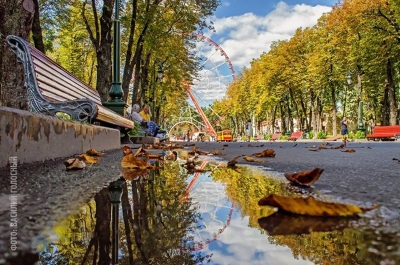
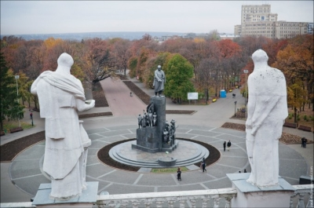

The best place to stay in Kharkov
Gorky Park
If we turn to the history of Gorky Park, it was founded in 1893-1895. Then he had the name of the suburban Nikolaev park. The grand opening was held in 1907, as the trees planted here were expected to grow. This park can rightfully be considered a city-wide park, since the townspeople threw themselves off on it, as they say, "by the whole world." They also planted trees amicably. It is thanks to the enthusiasm of the townspeople that the park has grown by almost half of the planned area. It occupied 98 hectares. The layout of the alleys imitated the Bois de Boulogne. Combined in an elongated ring, Kashtanovaya and Lipovaya alleys were intended for horseback riding. In Soviet times, the area grew, and after the death of the writer Maxim Gorky, the park received his name. It would seem that a cloudless future awaits him, but during the Great Patriotic War, the park was destroyed almost to the ground. Its restoration and renewal, which took place in the post-war years, were accompanied by new architectural features. So, in 1952, a colonnade was built at the entrance (architects A. G. Krynkin, E. A. Svyatchenko). One of the park alleys is crowned with a beautiful fountain, near which it is always pleasant to be in the summer heat. Here the lovers made dates, the children rode on toy cars and the rollers came to take a break. In the park, one could always hear the cheerful laughter of children and adults. Well, of course, because there were many attractions loved by the townspeople - chains, roller coasters, small trains, a Ferris wheel swing, from the booths of which a wonderful view of the city sights opened up. But this is all history. Today the park is being actively renovated and reconstructed. In Kharkov, the time has come for the construction of a modern park with attractions, carousels and fun entertainment. Kharkov Disneyland - this is how this project of the Kharkov city council was dubbed. Roller coasters and a 55-meter Ferris wheel in Gorky Park very quickly become a reality from a beautiful idea. “Gorky Park will become the first family park in Ukraine, where all age categories of the population will find a place to their liking for recreation. Having arrived there, the family will be able to spend the whole day there, ”said then Kharkiv mayor Gennady Kernes.
Shevchenko park
Shevchenko Park is a real symbol of the city, its zest. The history of the garden dates back to 1804, when the first trees were planted here by the founder of Kharkov National University, Vasily Nazarovich Karazin, after whom the university was named. The garden blended into the existing oak grove, which was then located on the outskirts of the city. Its upper part became a landscape park, and its lower part became a botanical garden. The first name given to the park by the founding fathers was Universitetsky. Four years later, an astronomical observatory was erected in the garden, where one could observe the stars, the moon and, of course, make wishes during a star shower. And in 1896, the Kharkov Zoological Garden was opened on the territory of the park - the first in Ukraine and the third in the entire Russian Empire. Today Kharkiv Zoo is also among the leaders, being one of the best in the country. It is constantly developing, building, updating, and the collection of animals will be replenished with new interesting species. In the 30s of the XX century, a large-scale reconstruction was carried out under the guidance of the architect V.P. Shirshov, professor A.I. Kolesnikov and dendrologist K.D. In 1935, the garden was renamed in honor of the great Ukrainian poet, Kobzar Taras Grigorievich Shevchenko, whose monument was solemnly unveiled on the central alley of the garden. The Great Patriotic War caused significant damage to the park, destroying more than half of the plants. During the occupation, one of the alleys was turned into a military cemetery for senior officers and military commanders. Here were buried General of the infantry division Georg von Braun in 1941 and in July 1943 - the commander of the 6th Panzer Division Walter von Hunersdorf, who was wounded on July 14 near Belgorod during the Battle of Kursk and died after the operation in Kharkov. They were going to establish a pantheon of military glory in the garden, but after the liberation, the burial was destroyed, and the park began to be restored. The reconstruction was carried out by the architect A.S. Mayak and dendrologists I. B. Melikentsev, A. D. Ganaeva. For the 300th anniversary of the park, the architect A.S. The lighthouse and engineer F.I.Savuskan presented the city with a cascade staircase. The magnificent architectural masterpiece has become one of the favorite walking places for Kharkiv citizens. Here you can always see camera flashes. Not only the staircase itself, a waterfall in the form of steps and a fountain with lions pleases the eye, but also a beautiful landscape that opens from the observation deck to the picturesque valley of the Lopan River. In 1963, a cinema and concert hall "Ukraine" was erected here according to the project of architects V. S. Vasiliev, Yu. A. Plaksiev, V. A. Reusov, engineer LB Fridgan. It was an engineering experiment. The roof of the hall is made in an unusual shape. Only a summer terrace was erected in the hall, since the architects did not dare to make a forecast regarding the durability of this structure. In 1967, the central alley of the park was decorated with a fountain, the architect of which was B.G. Klein, and since 1977 it has become a light-musical. The opening of this attraction was probably attended by the whole city.